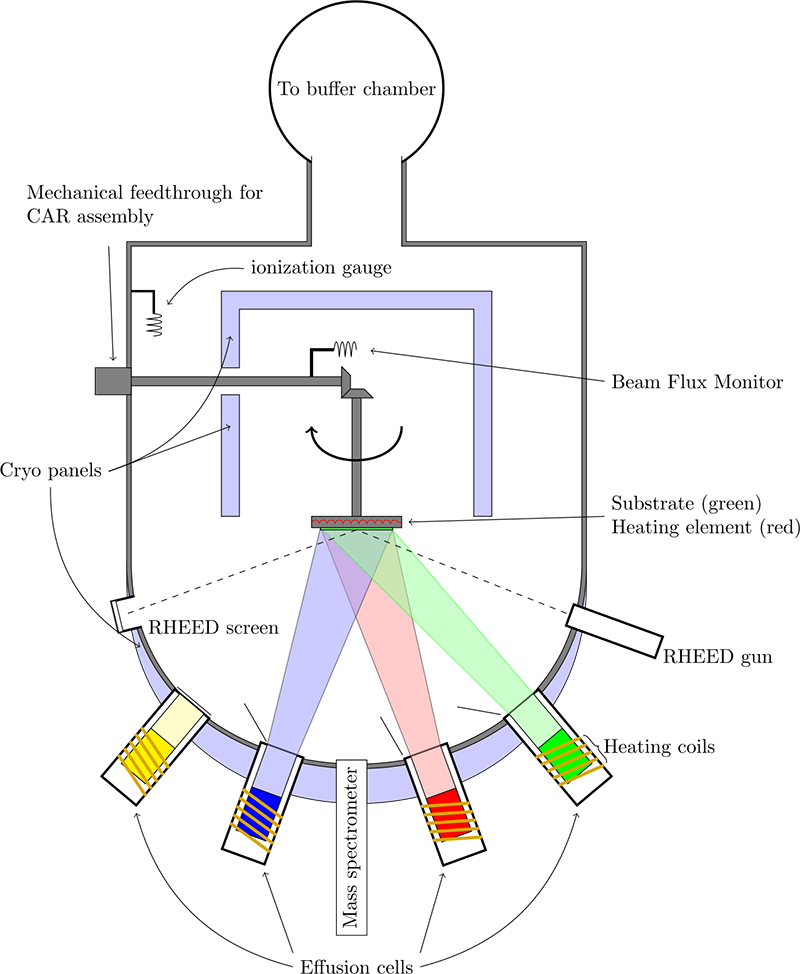

This project focuses on the growth of thin films and nanostructures using molecular beam epitaxy under ultra-high vacuum conditions. The goal is to understand how growth parameters such as substrate temperature, source flux, nitrogen plasma, and surface reconstruction affect film quality, morphology, and crystallinity.

Molecular beam epitaxy is a high-precision thin film growth technique where atomic or molecular beams are directed toward a heated crystalline substrate. Because the process occurs under ultra-high vacuum, the growth environment can be carefully controlled. This makes MBE useful for studying epitaxial growth, surface reconstruction, interface formation, and nanostructure development.
Silicon substrates are cleaned and annealed before growth to obtain a suitable surface for deposition. During growth, metal flux and nitrogen plasma are used to form nitride thin films or nanostructures. RHEED is used to monitor the surface in real time, while XPS, SEM, AFM, and XRD are used after growth to analyze the chemical states, morphology, roughness, and crystal structure.
Current work involves optimizing growth conditions for metal nitride films and nanostructures on silicon. The main focus is to understand how growth temperature, nitrogen plasma, and substrate orientation influence film formation, nanowire growth, and surface morphology.
Future work will focus on improving film uniformity, controlling nanostructure orientation, reducing unwanted secondary morphologies, and correlating RHEED observations with post-growth structural and chemical analysis.